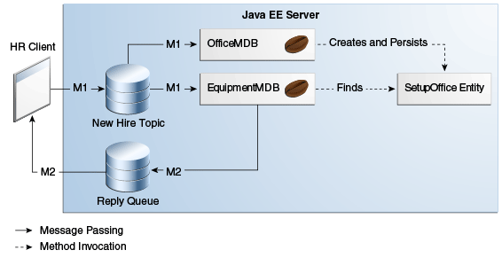

@Entity
public class SetupOffice implements Serializable {
|
Plataforma Java, Edición Empresarial (Java EE) 8 El Tutorial de Java EE |
| Anterior | Siguiente | Contenidos |
Esta sección explica cómo escribir, compilar, empaquetar, implementar y ejecutar una aplicación que usa la IPA de JMS con una entidad. La aplicación utiliza los siguientes componentes:
Un aplicación cliente que envía y recibe mensajes
Dos beans controlados por mensajes
Una clase de entidad
Encontrará los archivos fuente para esta sección en el directorio tut-install`/examples/jms/clientmdbentity/`. Los nombres de ruta en esta sección son relativos a este directorio.
Aquí se tratan los siguientes temas:
Esta aplicación simula, de forma simplificada, el flujo de trabajo del departamento de recursos humanos (HR) de una empresa cuando procesa una nueva contratación. Esta aplicación también demuestra cómo usar la plataforma Java EE para realizar una tarea que muchas aplicaciones JMS necesitan realizar.
Un cliente de mensajería a menudo debe esperar varios mensajes de varias fuentes. Luego usa la información en todos estos mensajes para ensamblar un mensaje que luego envía a otro destino. El término común para este patrón de diseño (que no es específico de JMS) es unir mensajes. Tal tarea debe ser transaccional, con todas las recepciones y envíos como una sola transacción. Si no todos los mensajes se reciben correctamente, la transacción puede revertirse. Para ver un ejemplo de cliente de aplicación que ilustra esta tarea, consulte Uso de Transacciones Locales.
Un bean controlado por mensajes puede procesar solo un mensaje a la vez en una transacción. Para proporcionar la capacidad de unir mensajes, una aplicación puede hacer que el bean controlado por mensajes almacene la información provisional en una entidad de la IPA de persistencia de Java. La entidad puede entonces determinar si se ha recibido toda la información; cuando lo ha hecho, la entidad puede informar esto a uno de los beans controlados por mensajes, que luego crea y envía el mensaje al otro destino. Una vez que ha completado su tarea, la entidad puede eliminarse.
Los pasos básicos de la aplicación son los siguientes.
La aplicación cliente del departamento de recursos humanos genera una identificación
de empleado para cada nueva contratación y luego publica un mensaje (M1) que contiene el
nombre de la nueva contratación, la identificación del empleado y la posición. Publica el
mensaje en un tema porque el mensaje debe ser consumido por dos beans controlados por
mensajes. Luego, el cliente crea una cola temporal, ReplyQueue, con un detector
de mensajes que espera una respuesta al mensaje. (Consulte
Creación de Destinos Temporales para obtener más
información).
Dos beans controlados por mensajes procesan cada mensaje: un bean, OfficeMDB,
asigna el número de oficina del nuevo empleado, y el otro bean, EquipmentMDB,
asigna el equipo del nuevo empleado. El primer bean que procesa el mensaje crea y persiste
en una entidad llamada SetupOffice, luego llama a un método de negocio de la
entidad para almacenar la información que ha generado. El segundo bean localiza la entidad
existente y llama a otro método de negocio para agregar su información.
Cuando tanto la oficina como el equipo han sido asignados, el método de negocio de la
entidad devuelve un valor de true al bean controlado por mensajes que llamó al
método. El bean controlado por mensajes luego envía a la cola de respuesta un mensaje (M2)
que describe las asignaciones. Luego elimina la entidad. El detector de mensajes del cliente
de la aplicación recupera la información.
Figura 49-5 ilustra la estructura de esta aplicación. Por supuesto, una aplicación de recursos humanos real tendría más componentes; otros beans podrían configurar registros de nómina y beneficios, orientación de horarios, etc.
Figura 49-5 asume que OfficeMDB es el primer bean controlado
por mensajes que consume el mensaje del cliente. OfficeMDB luego crea y conserva la
entidad SetupOffice y almacena la información de la oficina.
EquipmentMDB luego encuentra la entidad, almacena la información del equipo y se
entera de que la entidad ha completado su trabajo. EquipmentMDB luego envía el
mensaje a la cola de respuesta y elimina la entidad.

Escribir los componentes de la aplicación implica codificar el cliente de la aplicación, los beans controlados por mensajes y la clase de entidad.
Aquí se tratan los siguientes temas:
La aplicación cliente, HumanResourceClient.java, que se encuentra en
clientmdbentity-app-client, realiza los siguientes pasos:
Define un tema para la aplicación, usando el espacio de nombres java:app
porque el tema se usa tanto en el cliente de la aplicación como en el módulo EJB
Inyecta recursos ConnectionFactory y Topic
Crea una TemporaryQueue para recibir notificaciones del procesamiento que se
produce, en función de los eventos de nuevas contrataciones que ha publicado.
Crea un JMSConsumer para TemporaryQueue, establece el detector
de mensajes de `JMSConsumer e inicia la conexión
Crea un MapMessage
Crea cinco nuevos empleados con nombres, puestos y números de identificación generados aleatoriamente (en secuencia) y publica cinco mensajes que contienen esta información
El detector de mensajes, HRListener, espera los mensajes que contienen la oficina
y el equipo asignados a cada empleado. Cuando llega un mensaje, el detector de mensajes
muestra la información recibida y determina si los cinco mensajes han llegado. Cuando lo han
hecho, el detector de mensajes notifica al método main, que luego sale.
Este ejemplo utiliza dos beans controlados por mensajes, ambos bajo
clientmdbentity-ejb:
EquipmentMDB.java
OfficeMDB.java
Los beans siguen los siguientes pasos.
Inyectan un recurso MessageDrivenContext, un EntityManager y un
JMSContext.
El método onMessage recupera la información del mensaje. El método
`onMessage de EquipmentMDB elige el equipo, basado en la posición del nuevo
empleado; el método `onMessage de OfficeMDB genera aleatoriamente un número
de oficina.
Después de un ligero retraso para simular problemas de procesamiento del mundo real, el
método onMessage llama a un método auxiliar, compose.
El método compose sigue los siguientes pasos.
Crea y persiste la entidad SetupOffice o la encuentra por clave principal.
Utiliza la entidad para almacenar el equipo o la información de la oficina en la base de
datos, llamando al método comercial doEquipmentList o
doOfficeNumber.
Si el método comercial devuelve true, lo que significa que se ha almacenado
toda la información, recupera la información de destino de la respuesta del mensaje, crea
un JMSProducer y envía un mensaje de respuesta. que contiene la información
almacenada en la entidad.
Elimina la entidad.
La clase SetupOffice.java, también bajo clientmdbentity-ejb, es una
clase de entidad. La entidad y los beans controlados por mensajes se empaquetan juntos en un
archivo JAR EJB. La clase de entidad se declara de la siguiente manera:
@Entity
public class SetupOffice implements Serializable {
La clase contiene un constructor sin argumentos y un constructor que toma dos argumentos, el
ID y el nombre del empleado. También contiene métodos getter y setter para la identificación
del empleado, el nombre, el número de oficina y la lista de equipos. El método getter para el
ID de empleado tiene la anotación @Id para indicar que este campo es la clave
principal:
@Id
public String getEmployeeId() {
return id;
}
La clase también implementa los dos métodos comerciales, doEquipmentList y
doOfficeNumber, y su método auxiliar, checkIfSetupComplete.
Los beans controlados por mensajes llaman a los métodos comerciales y a los métodos captadores.
El archivo persistence.xml para la entidad especifica la configuración más
básica:
<?xml version="1.0" encoding="UTF-8"?>
<persistence version="2.1"
xmlns="http://xmlns.jcp.org/xml/ns/persistence"
xmlns:xsi="http://www.w3.org/2001/XMLSchema-instance"
xsi:schemaLocation="http://xmlns.jcp.org/xml/ns/persistence
http://xmlns.jcp.org/xml/ns/persistence/persistence_2_1.xsd">
<persistence-unit name="clientmdbentity-ejbPU" transaction-type="JTA">
<provider>org.eclipse.persistence.jpa.PersistenceProvider</provider>
<jta-data-source>java:comp/DefaultDataSource</jta-data-source>
<properties>
<property name="eclipselink.ddl-generation"
value="drop-and-create-tables"/>
</properties>
</persistence-unit>
</persistence>
Puede usar el EID de NetBeans o Maven para compilar, implementar y ejecutar el ejemplo de
clientmdbentity.
Dado que el ejemplo define su propio tema privado de aplicación y utiliza la fábrica de
conexiones predeterminada preconfigurada java:comp/DefaultJMSConnectionFactory y el
recurso JDBC predeterminado preconfigurado java:comp/DefaultDataSource, no es
necesario crear recursos para ello.
Aquí se tratan los siguientes temas:
Asegúrese de que se haya iniciado el servidor GlassFish (consulte Arrancando y Parando el Servidor GlassFish), así como el servidor de la base de datos (consulte Arrancando y Parando Apache Derby).
En el menú Archivo, elija Abrir proyecto.
En el cuadro de diálogo Abrir proyecto, vaya a:
tut-install/examples/jms/clientmdbentity
Seleccione la carpeta clientmdbentity.
Haga clic en Abrir proyecto.
En la pestaña Proyectos, haga clic con el botón derecho en el proyecto
clientmdbentity y seleccione Generar.
Este comando crea lo siguiente:
Un archivo JAR de cliente de aplicación que contiene los archivos de clase de cliente y de clase de escucha, junto con un archivo de manifiesto que especifica la clase principal
Un archivo JAR EJB que contiene los beans controlados por mensajes y la clase de
entidad, junto con el archivo persistence.xml
Un archivo EAR de la aplicación que contiene los dos archivos JAR junto con un
archivo application.xml
El archivo clientmdbentity.ear se crea en el directorio
clientmdbentity-ear/target/.
Luego, el comando implementa el archivo EAR, recupera los apéndices del cliente y ejecuta el cliente de la aplicación.
Asegúrese de que se haya iniciado el servidor GlassFish (consulte Arrancando y Parando el Servidor GlassFish), así como el servidor de la base de datos (consulte Arrancando y Parando Apache Derby).
Vaya al siguiente directorio:
tut-install/examples/jms/clientmdbentity/
Para compilar los archivos de origen y empaquetar, implementar y ejecutar la aplicación, ingrese el siguiente comando:
mvn install
Este comando crea lo siguiente:
Un archivo JAR de cliente de aplicación que contiene los archivos de clase de cliente y de clase de escucha, junto con un archivo de manifiesto que especifica la clase principal
Un archivo JAR EJB que contiene los beans controlados por mensajes y la clase de
entidad, junto con el archivo persistence.xml
Un archivo EAR de la aplicación que contiene los dos archivos JAR junto con un
archivo application.xml
Luego, el comando implementa la aplicación, recupera los apéndices del cliente y ejecuta el cliente de la aplicación.
La salida en la ventana de salida del EID de NetBeans o en la ventana de la terminal se ve así (precedida por la salida del contenedor del cliente de la aplicación y la salida de Maven):
SENDER: Setting hire ID to 50, name Bill Tudor, position Programmer
SENDER: Setting hire ID to 51, name Carol Jones, position Senior Programmer
SENDER: Setting hire ID to 52, name Mark Wilson, position Manager
SENDER: Setting hire ID to 53, name Polly Wren, position Senior Programmer
SENDER: Setting hire ID to 54, name Joe Lawrence, position Director
Waiting for 5 message(s)
New hire event processed:
Employee ID: 52
Name: Mark Wilson
Equipment: Tablet
Office number: 294
Waiting for 4 message(s)
New hire event processed:
Employee ID: 53
Name: Polly Wren
Equipment: Laptop
Office number: 186
Waiting for 3 message(s)
New hire event processed:
Employee ID: 54
Name: Joe Lawrence
Equipment: Mobile Phone
Office number: 135
Waiting for 2 message(s)
New hire event processed:
Employee ID: 50
Name: Bill Tudor
Equipment: Desktop System
Office number: 200
Waiting for 1 message(s)
New hire event processed:
Employee ID: 51
Name: Carol Jones
Equipment: Laptop
Office number: 262
La salida de los beans controlados por mensajes y la clase de entidad aparece en el registro del servidor.
Para cada empleado, la aplicación primero crea la entidad y luego la encuentra. Es posible que vea errores de tiempo de ejecución en el registro del servidor y que se produzcan reversiones de transacciones. Los errores ocurren si ambos beans controlados por mensajes descubren al mismo tiempo que la entidad aún no existe, por lo que ambos intentan crearla. El primer intento tiene éxito, pero el segundo falla porque el bean ya existe. Después de la reversión, el segundo bean controlado por mensajes vuelve a intentarlo y logra encontrar la entidad. Las transacciones administradas por contenedores permiten que la aplicación se ejecute correctamente, a pesar de estos errores, sin programación especial.
Para cancelar la implementación de la aplicación una vez que haya terminado de ejecutarla, use
la pestaña Servicios o emita el comando mvn cargo:undeploy.
| Anterior | Siguiente | Contenidos |